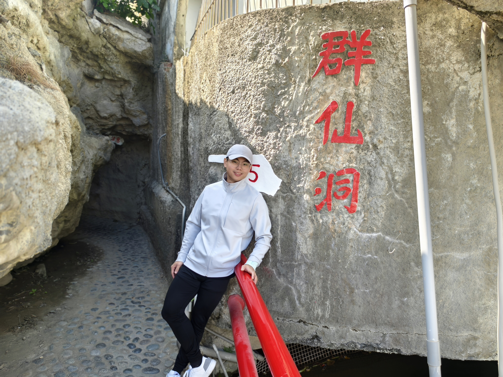

01
作品集
整理專案背景、需求分析、執行方法、成果與後續改善方向。
前往 PortfolioPersonal Portfolio
Digital Transformation | AI Solutions | Business Analysis
Welcome to my personal website.
待補內容：可在此加入你的專業背景、擅長領域、職涯方向與希望解決的問題。

Explore
從實務專案、閱讀反思與持續學習，呈現我的問題解決歷程。
整理專案背景、需求分析、執行方法、成果與後續改善方向。
前往 Portfolio記錄重要觀點、個人反思，以及能實際應用於工作與生活的想法。
前往 Reading區分專業與業餘學習，將零散知識整理成可持續累積的知識庫。
前往 Learning Notes